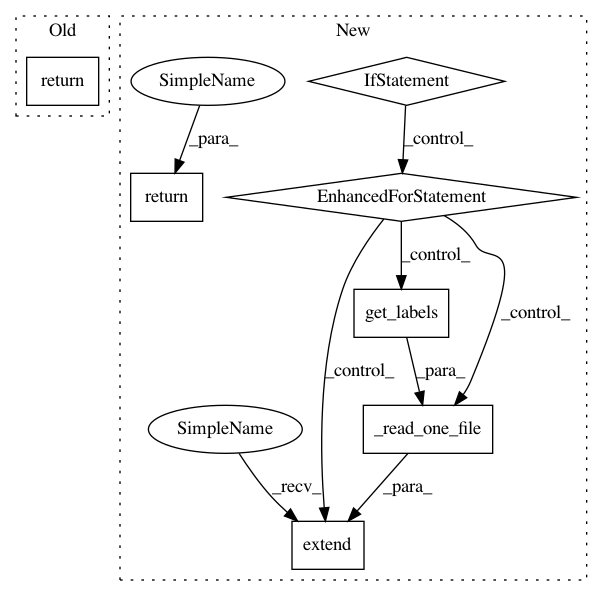

e9057c4df9ffc703e665ba8ee2d0d74c37d90065,official/nlp/data/tagging_data_lib.py,PanxProcessor,get_dev_examples,#PanxProcessor#Any#,96
Before Change
os.path.join(data_dir, "train-en.tsv"), self.get_labels())
def get_dev_examples(self, data_dir):
return _read_one_file(
os.path.join(data_dir, "dev-en.tsv"), self.get_labels())
def get_test_examples(self, data_dir):
examples_dict = {}
for language in self.supported_languages:
After Change
def get_dev_examples(self, data_dir):
examples = _read_one_file(
os.path.join(data_dir, "dev-en.tsv"), self.get_labels())
if not self.only_use_en_dev:
for language in self.supported_languages:
if language == "en":
continue
examples.extend(
_read_one_file(
os.path.join(data_dir, f"dev-{language}.tsv"),
self.get_labels()))
return examples
def get_test_examples(self, data_dir):
examples_dict = {}
for language in self.supported_languages:
In pattern: SUPERPATTERN
Frequency: 4
Non-data size: 7
Instances
Project Name: tensorflow/models
Commit Name: e9057c4df9ffc703e665ba8ee2d0d74c37d90065
Time: 2020-11-14
Author: tianqiliu@google.com
File Name: official/nlp/data/tagging_data_lib.py
Class Name: PanxProcessor
Method Name: get_dev_examples
Project Name: tensorflow/models
Commit Name: e9057c4df9ffc703e665ba8ee2d0d74c37d90065
Time: 2020-11-14
Author: tianqiliu@google.com
File Name: official/nlp/data/tagging_data_lib.py
Class Name: PanxProcessor
Method Name: get_train_examples
Project Name: tensorflow/models
Commit Name: e9057c4df9ffc703e665ba8ee2d0d74c37d90065
Time: 2020-11-14
Author: tianqiliu@google.com
File Name: official/nlp/data/tagging_data_lib.py
Class Name: UdposProcessor
Method Name: get_dev_examples
Project Name: tensorflow/models
Commit Name: e9057c4df9ffc703e665ba8ee2d0d74c37d90065
Time: 2020-11-14
Author: tianqiliu@google.com
File Name: official/nlp/data/tagging_data_lib.py
Class Name: UdposProcessor
Method Name: get_train_examples